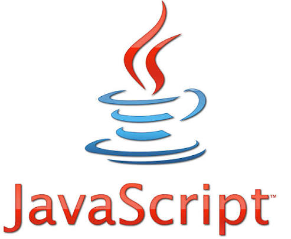

javascript
اسم الطالبة: مرام ناصر محمود عبد الفضيل
الرقم الجامعي:2502578
المقدمه
تعتبر لغة جافا سكريبت (JavaScript) واحدة من أهم ركائز تطوير الويب الحديث إلى جانب كل من لغة HTML ولغة CSS، فلقد صممت لإضافة التفاعل والحيوية إلى صفحات الويب وتطورت عبر السنين حيث أصبحت لغة برمجة شاملة وقوية في تطوير العميل وتطبيقات الخادم.

عرض الموضوع
نبذه تاريخيه عن JavaScript
ظهرت لغة JavaScript في عام 1995 بواسطة برندان إيك في شركة نتسكيب.
حيث أطلق عليها في البداية اسم LiveScript وتغير الاسم إلى JavaScript بسبب التسويق والشهرة التي حظيت بها لغة جافا، بالرغم أنه لا يوجد ارتباط بين اللغتين.
ولتوحيد معايير اللغة وضمان توافقها، خضعت جافا سكريبت لما يعرف بـ ECMAScript وتديره منظمة ECMA International عن طريق لجنة تسمى TC39.
الخصائص الرئيسية JavaScript
- 1- لغة تفسيرية (Interpreted / Just-In-Time Compiled):
يتم وضع الكود عبر محركات المتصفح مثل محرك V8 في كروم بدون ترجمة مسبقة.
- 2- ديناميكية النوع (Dynamically Typed):
يحدد النوع تلقائيا وقت تشغيل البرنامج.
- 3- مفردة الخيط (Single-Threaded):
تعالج المهام بشكل أساسي عبر خيط تنفيذ واحد، ولكنها تدعم البرمجة غير المتزامنة (Asynchronous Programming) عبر حلقة الأحداث (Event Loop) للتعامل مع العمليات المتعددة بكفاءة.
- 4- متعددة الأنماط (Multi-paradigma):
تدعم البرمجة الإجرائية، والبرمجة الكائنية (OOP)، والبرمجة الوظيفية (Functional Programming).
مجالات استخدام JavaScript
- - تطوير واجهات المستخدم (Frontend),
مثل (React.js, Vue.js, Angular).
- تطوير الخوادم (Backend).
- - تطوير تطبيقات الهواتف الذكية,
مثل (React Native) و(Ionic).
- - تطوير تطبيقات سطح المكتب,
مثل (Electron).
إيجابيات JavaScript
- سهولة التعلم للمبتدئين.
- السرعة والأداء.
- مجتمع ضخم ودعم واسع.
سلبيات JavaScript
- اختلاف التوافقية.
- الأمان.
استخدامات JavaScript في العصر الحديث
- تطبيقات الهواتف الذكية.
- الواجهات الأمامية (Frontend Development).
- الواجهات الخلفية (Backend Development).
- تطوير الألعاب.
- تطوير تطبيقات سطح المكتب.
| الاجابيات |
السلبيات |
| سهولة التعلم للمبتدئين. |
اختلاف التوافقية. |
| السرعة والأداء. |
الأمان. |
الخاتمة
لغة جافا سكريبت أثبتت أنها العمود الفقري لعالم الويب الحديث وتُعد JavaScript المهارة الأهم والأكثر طلبا في سوق العمل التقني حاليا.
المراجع
-
مدونة شبكة مطوري موزيلا (MDN Web Docs):
- JavaScript language overview.
MDN Documentationمتاح على:
-
دليل الجافا سكريبت الحديث (The Modern JavaScript Tutorial):
An Introduction to JavaScript.
JavaScript.info.متاح على:
-
موسوعة ويكيبيديا الحرة:
مقالة جافا سكريبت (JavaScript).
ويكيبيديا العربية.متاح على:
-
أكاديمية حسوب:
تعرف على أساسيات لغة JavaScript من منظور عام.
أكاديمية حسوبمتاح على:
-
توثيق شركة أوراكل التقني (Oracle Help Center):
Overview of JavaScript
Oracle Docsمتاح على: